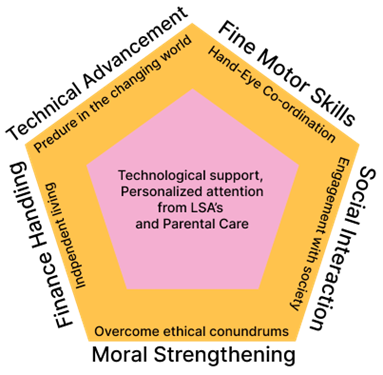
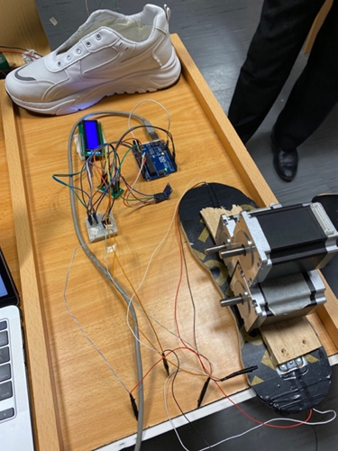
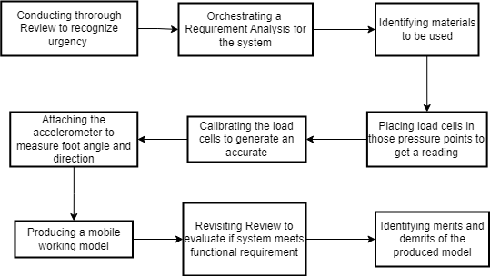
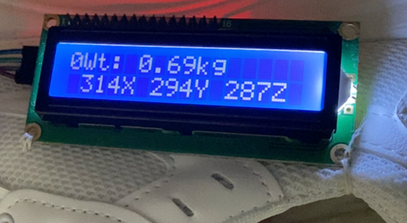
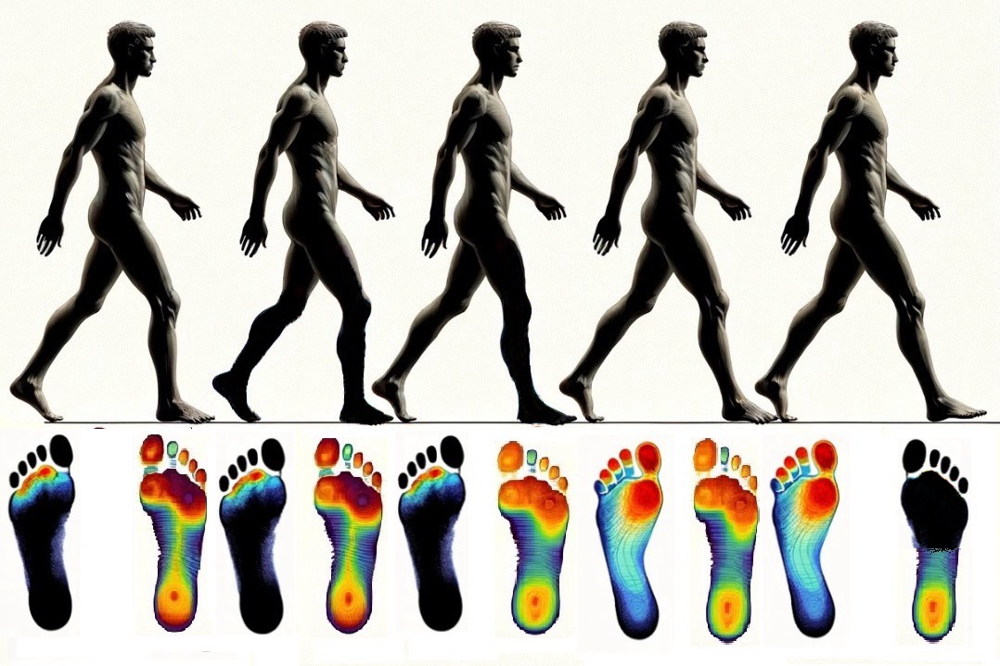
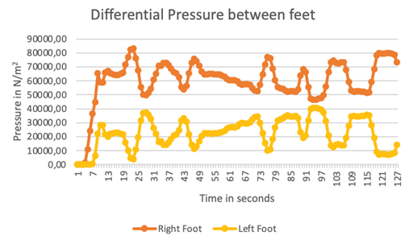
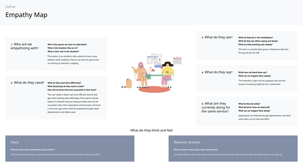
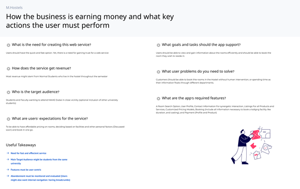
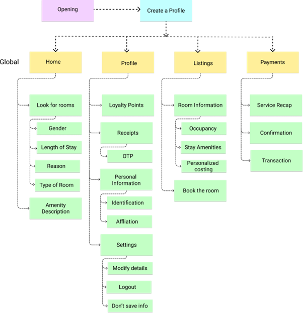
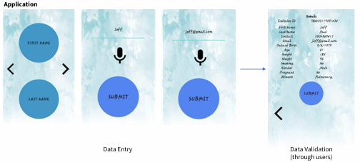

Research Portfolio 🎓
UX Research & Development Projects
Research Overview
My research portfolio represents a comprehensive exploration of human-computer interaction, accessibility, and cognitive science applications in technology development. Each project is grounded in theoretical frameworks and empirical evidence, with a focus on measurable outcomes and user-centered design principles.
TripBot: Conversational Interface for BLV Travel Assistance
Human-Computer Interaction Conversational AI Large Language Models User Research Assistive Technology
January 2024 - Present
Research Context
The development of TripBot began with identifying a critical gap in existing travel assistance solutions for Blind and Low Vision (BLV) individuals. While current solutions provided basic navigation assistance, they often failed to address the need for real-time environmental awareness and contextual information. This limitation became particularly apparent during initial auto-ethnography conducted with a BLV team member, who expressed frustration with systems that couldn’t adapt to dynamic urban environments or provide meaningful context about their surroundings.
Research Process & Design Decisions
Through our auto-ethnography, I derived key insights:
Environmental Context Needs
- BLV individuals want to understand not just their stand-alone location, but the surrounding context.
- There is no standardized resource for BLV people to inquire about cane tips and contextualized and accurate travel guidance based on exact times of travel.
- BLV individuals wish to gain information about potential obstacles or changes in the environment based on their plans and want to be prepared for their trip in advance.
Technical Approach Selection Based on these findings, we chose to develop a conversational interface for several reasons:
- Natural language allows for more nuanced communication of environmental context.
- Conversational interfaces can adapt to different levels of detail based on user needs and is the primary mode of learning for BLV people.
- The format enables two-way communication, allowing users to ask for specific information and providing a channel for relaying accurate feedback.
LLM Integration Decision The Initial testing with GPT-3.5 showed limitations in understanding spatial relationships and answers riddled with hallucinations. I therefore prompt engineered and developed a Retrieval-Augmented Generation piple for leveraging LLaMA-2’s contenxtual capabilities allowed for better processing of environmental context. I was able to generate reduced hallucinations through inputting weather data directly via the OpenWeatherMap API and Orientation and Mobility (O & M) assistive technology dataset (which was curated by a team member). However, we still faced certain devolving conversations where the LLM could not remember context.
Findings The internal system testing indicated varying preferences for detail levels where team members wished to customize the verbosity of the LLM. Another theme of the need to balance information density with cognitive load emerged, which highlighted the importance of personalizing the experience for different users.
Implementation Challenges & Solutions
During the implementation phase, we encountered several challenges:
- Environmental Understanding
- Challenge: Accurately interpreting information about complex urban environments the user wants to traverse.
- Solution: Developed an approach of feeding data for RAG in which accurate data was dynamically fetched and fed into the LLM.
- Result: Improved accuracy in identifying and describing environmental features.
- Response Generation
- Challenge: Creating natural, informative responses without overwhelming users.
- Solution: Implemented a context-aware response system that considers:
- User’s current activity
- Environmental complexity
- User’s stated preferences
- Result: More natural and useful responses that adapt to the situation that allows users to initiate and direct conversation.
- User Testing & Iteration The system underwent three major iterations based on user feedback:
- First iteration: Focused on basic navigation and environmental description.
- Second iteration: Added preference-based customization.
- Third iteration: Implemented continuous learning from user interactions (text-based).
Current Status & Future Directions
The project is currently in the pilot testing phase, with several key areas of focus:
- System Performance
- Evaluating response accuracy in various urban environments.
- Implementing a fine-tuned LLaVA model to provide a platform for multimodal streaming.
- Measuring user satisfaction with different types of information by analyzing user responses through vanilla sentiment analysis and NLU algorithms for tone analysis and topic modelling.
- Assessing the effectiveness of the system through transformer-based benchmarking.
- User Experience
- Gathering feedback on the conversational interface.
- Identifying areas for improvement in response generation.
- Understanding how users adapt to the system over time. I wish to understand if system familiarity should be considered as an independent variable.
RLHF Voice Agent: Emotional Intelligence in Human-Computer Interaction
![Flowchart diagram of the smart mirror's conversational agent framework. The process starts when the user utters a 'trigger' word, activating the mirror's functionality. The system initiates a dialogue, leading to a voice-enabled conversation. An emotional label is attached to the user's input. The system then judges the conversational requirement: if empathy is needed, it continues the conversation; if redirection is needed, it stores attention values and either redirects or ends the conversation. The flow includes decision points for empathizing, redirecting, or ending the conversation, illustrating how the agent uses emotion and attention data to guide interaction.](img/rlhf/2_VCA_framework.png)
Human-Computer Interaction Reinforcement Learning Emotion Recognition Voice Interfaces UX Design
March 2023 - January 2024
Research Context
I’ve always been fascinated by how emotionally intelligent systems could transform everyday interactions. What really pushed me to work on this smart mirror was the gap I noticed between sentiment-aware systems and systems that act empathetically in real time. Most systems stop at recognizing emotion — they don’t respond meaningfully to it, and almost none link that to cognitive load or user attention. I felt there was untapped potential here, especially in a device as unobtrusive and personal as a mirror.
Research Process & Design Decisions
I started by asking: “How can I design something that feels natural and helpful, not forced or robotic?” This led me to center the user’s emotion and attention as core signals, integrating multiple modalities — speech, facial expression, gaze — to get a richer sense of the user’s state. The project began with a four-month development phase, followed by a single testing session with 5 participants (ages 20-25).
Emotional Recognition Needs
- Users wanted more than just voice commands; they sought emotional understanding
- There was a need for real-time emotional state recognition
- Participants expressed desire for supportive responses that maintained conversation context
- Testing revealed that users with neutral or happy moods showed better recall, suggesting cognitive benefits
Emotion Recognition Performance For speech emotion recognition, I chose four robust open-source datasets. My reasoning:
- Real human voices across emotions provide enough variance
- These datasets offered high-quality, labeled emotional recordings
- I trained the model using Keras Sequential, prioritizing interpretability and rapid iteration
![Confusion matrix for emotion recognition. Rows represent actual emotions (Anger, Fear, Happiness, Neutral, Sadness), columns represent predicted emotions. The matrix shows high accuracy for Anger (138 correct), Fear (105), Happiness (98), Neutral (86), and Sadness (111). Some misclassifications occur, such as Happiness being confused with Fear (50 times) and Sadness with Fear (34 times). The color intensity represents the number of samples, with darker blue indicating higher counts. This visualization helps assess which emotions are most and least accurately classified by the model.](img/rlhf/3_confusion_matrix.png)
Key observations:
- Highest accuracy in recognizing neutral (85%) and happy (85%) states
- Some confusion between sad and angry states (10% misclassification)
- Overall accuracy of 81.25% across all emotional states
Technical Approach Selection I chose to develop a smart mirror interface because people look in the mirror every day. It’s a private, habitual, emotionally raw moment. That’s exactly where emotional technology should be — not in a sterile app, but integrated into daily life. A mirror also gave me:
- A large, passive screen for gaze tracking
- A way to observe subtle emotional shifts
- A familiar object — people wouldn’t be intimidated by the tech
![Screenshot of the smart mirror interface during a user session. The top left shows a webcam feed with a green square around the user's face and facial landmarks detected, indicating real-time facial emotion analysis. Below, a math problem (1 - 6 = ?) is displayed with two answer options, -4 and -5, each in a box. A red dot appears near the -5 option, representing the user's gaze or selection. This interface demonstrates the integration of facial analysis and attention tracking during a cognitive task.](img/rlhf/3_screen.png)
I intentionally avoided overly complex UI, keeping visual clutter minimal. The goal was to let the conversation be the main interface.
Attention Monitoring System I knew that emotion alone doesn’t tell the whole story. So I thought: Can I also track how engaged the user is? That’s where eye-tracking came in. I developed attention metrics based on:
- Focus (how long someone stays on a task)
- Task-switching (how easily they shift between dialogue and problem-solving)
- Processing speed
- A composite metric (AM) with weights I could adjust later
![Bar chart titled 'Time Segregation for each user based on emotion.' The x-axis lists five participants (P1 to P5). Each bar is divided into three colored segments: blue for Focus Time (ms), cyan for Process Time (ms), and green for Task Switching Time (ms). The chart shows that Process Time is the largest component for most users, while Task Switching Time varies, being highest for P4. This visualization quantifies and compares how users allocate their time across different cognitive activities during the experiment.](img/rlhf/3_time_seg.jpg)
RLHF Implementation Decision I opted for a Partial Observable Markov Decision Process (POMDP) because I was dealing with uncertainty — I wouldn’t always know the user’s true state, but I’d have probabilities. That’s real life, right? The action set was deliberately simple: empathize or redirect. My thought was: instead of trying to fake deep empathy with shallow scripts, the system should:
- Continue the topic gently if the user seems open
- Change the subject or backtrack if things felt tense or stagnant
- This made the CA feel more natural and respectful
Implementation Challenges & Solutions
During the implementation phase, I encountered several challenges:
- Speech Analysis
- Challenge: Real-time emotion recognition from speech
- Solution: Developed an RNN model with acoustic feature extraction
- Result: Improved accuracy in identifying emotional markers in speech
- Additional: Trained on four robust open-source datasets for better emotional variance
- Response Generation
- Challenge: Creating emotionally appropriate responses
- Solution: Implemented a POMDP-based RLHF algorithm that considers:
- Current emotional state
- Conversation history
- User preferences
- Attention metrics
- Result: More natural and supportive responses that maintain context
- System Integration The system underwent three major iterations:
- First iteration: Basic emotion recognition and response generation
- Second iteration: Integration of RLHF for improved response quality
- Third iteration: Implementation of low-latency processing pipeline
- Current focus: Replacing static utterances with dynamic LLM-generated responses
Impact & Contributions
Every decision I made was about respecting the user: their time, their emotions, their cognitive energy. The smart mirror isn’t just a tech project — it’s an effort to humanize the way we interact with machines. I believe that when systems understand us better — not just what we say, but how we feel — they can truly support us, not just respond to us.
The project’s technical innovations centered around developing a novel approach to emotional state recognition, combining POMDP-based RLHF for emotional responses with multiple models for comprehensive emotional understanding. The attention monitoring system I developed for cognitive load assessment represents a significant advancement in understanding the relationship between emotional states and user engagement.
From a user experience perspective, the system demonstrated improved emotional support through AI, creating more natural and context-aware interactions. The personalized emotional response generation, combined with careful consideration of the user’s cognitive energy and attention, resulted in a more human-like interaction that users found both helpful and comfortable.
The research contributions extend beyond the technical implementation, offering new insights into emotional AI interaction and effective emotional support methods. The framework I developed for RLHF in emotional response generation, along with the observed correlation between emotional states and cognitive performance, provides valuable groundwork for future research in emotionally intelligent systems.
Learning Through Technology to Enhance Skill Development in Autistic Females
![User flow diagram for the learning application. The flow starts with opening the application, building a changeable character, and learning with the character. The user then begins a lesson and chooses a learning method: reading, video, or writing with audio supplement. Each method leads to capturing the student's response (audio, written, or typed), which is then evaluated by the Learning Support Assistant (LSA). The diagram shows branching paths and highlights the human-in-the-loop evaluation step.](img/autisticedu/workflow.png)
Human-Computer Interaction UX Research Behavioral Analysis Inclusive Design Educational Technology
Role: Lead UX Researcher & Developer
Research Motivation & UX Philosophy
As a UX researcher deeply invested in inclusive design, I was driven by a personal commitment to address the systemic gaps faced by autistic females in education and workforce integration. Autistic females are significantly underrepresented in both diagnosis and developmental research, and their distinct needs—especially in emotional intelligence, motor skills, and social cognition—require tailored educational tools. My motivation stemmed from addressing this disparity by designing an assistive technology that not only facilitates learning but also nurtures autonomy and confidence.
I believe the best solutions emerge from real human stories, lived experiences, and rigorous contextual inquiry. My aim was to ground every design decision in empathy, evidence, and utility, ensuring the tool would be empowering, not just functional.
Research Methods & Development Process
Contextual Inquiry & Qualitative Fieldwork
- Conducted one-on-one interviews with Learning Support Assistants (LSAs) and parents.
- Performed observational studies during classroom and therapy sessions.
- Developed user personas synthesizing behavioral patterns and needs.
![User persona card for Samantha Richards, a 12-year-old autistic female student from Dubai. The card includes a cartoon avatar, her quote about wanting to be an anthropologist but feeling self-doubt, and key details: age, status, location, and work. The bio describes her as reclusive, struggling with social interactions, and wanting to be more confident. Habits include wanting daily tablet time, preferring individual work, and being sharp-tongued when she does speak. Goals are to overcome fear of competition and be respected by peers. Skills listed are reading and content writing. This visual summarizes her emotional, social, and learning profile for design reference.](img\autisticedu\persona.png)
These insights allowed me to define the emotional, cognitive, and social barriers autistic females face in typical learning environments, directly informing user flows and interface design.
Pain Point Mapping & Thematic Analysis
- Mapped pain points such as:
- Difficulty concentrating on text-heavy material
- Lack of fine motor skill development
- Over-dependence on devices for comfort
- Inadequate real-world social engagement
This thematic analysis was pivotal in developing an evidence-based problem statement to guide the application’s design.
- Mapped pain points such as:
Behavioral Evaluation Framework: ABC Model
- Integrated the Antecedent-Behavior-Consequence (ABC) model for tracking student progress, aligning with how LSAs assess development.
- Ensured the system allowed manual evaluation, retaining a human-in-the-loop approach for personalized learning.
UX Design Development
Human-Centered Application Design
- Grounded the application in HCI principles and inclusive design.
- Key UX considerations included:
- Customizable independence levels for learners
- Bilingual support and dyslexia-friendly fonts
- Simulated social scenarios for practice
- Adaptive learning paths based on LSA input
These features were implemented with iterative feedback from users, ensuring the tool was responsive, intuitive, and emotionally considerate.
Interaction Design Features
- Multi-sensory modules: visual, auditory, and tactile activities
- Adaptive interfaces for dyslexia and fine motor skill delays
- Real-time voice response and speech evaluation for students unable to type
- Parental feedback integration loop
- Gender-sensitive educational modules (e.g., menstrual education, personal safety)

These design choices reflect the user’s cognitive style and aim to foster independence without isolation.
Anticipated Outcomes & UX Evaluation
As the application is still in development, I conducted predictive evaluation to anticipate user behavior and possible unintended consequences:
- Positive outcomes: Increased engagement, improved social and cognitive skills, and greater emotional self-awareness.
- Potential risks: Tech dependency, reduced real-world interaction, and loss of handwriting skills.
To mitigate these risks, I proposed design strategies such as monitored screen time, human interaction checkpoints, and continuous feedback from LSAs and parents.
Conclusion: UX as Empowerment
This project is an embodiment of what UX research should strive to be—empathetic, data-informed, and rooted in the lived realities of underserved users. It merges behavioral psychology, human-computer interaction, and inclusive design to create tools that aren’t just usable, but life-changing. I believe this project exemplifies my ability to identify complex user needs, translate them into actionable insights, and deliver thoughtful, contextually relevant solutions. UX, to me, is not just about interfaces—it’s about creating systems that enable dignity, growth, and autonomy.
Smart Shoe: Biomechanical Analysis in Preventive Healthcare

Human-Computer Interaction Wearable Technology Biomechanics UX Research Data Visualization
Role: UX Researcher & Developer
Research Motivation & UX Philosophy
Chronic musculoskeletal pain, particularly in the knees, is often a consequence of unbalanced foot pressure and irregular gait. However, clinical tools rarely combine pressure metrics with orientation and stance in a real-time, wearable form. I undertook this project to design a system that fills that gap—a smart, user-friendly shoe that empowers users and health professionals with actionable insights.
As a UX researcher, I believe technology must not only measure data but also create clarity and comfort. This project reflects my core philosophy: good UX transforms complex sensing into intuitive, helpful feedback.
Research Methods & Development Process
Foundational Literature Review
- Conducted a comprehensive review of gait analysis tools and foot pressure mapping literature.
- Identified gaps in current measurement systems, such as the lack of foot angle tracking.
- Grounded hardware and software choices in validated medical research.
Hardware Prototyping and User-Centric Iteration
- Early testing showed velostat sensors lacked accuracy.
- Through a trial-and-error process, I selected load cells and gyrometers for precise weight and angle measurement, iteratively refining based on signal clarity and comfort.

Usability and Sensor Integration
- Focused on non-intrusiveness and practicality, ensuring sensors did not interfere with natural walking.
- Components were chosen and placed to balance accuracy with wearability—critical for long-term use in real environments.
Data Collection & Baseline Control Design
- Implemented a control method comparing system-derived weight against real values.
- Set a strict error margin (<100g) to ensure only high-fidelity data was considered for visualization.
UX System Design and Data Visualization
Real-Time Feedback & Data Interpretation
- Translated complex sensor data into visual outputs:
- LCD-readout of weight
- Footprint pressure heatmaps
- 3D foot orientation maps
 

- Translated complex sensor data into visual outputs:
User Behavior Tracking
- The system logged foot pressure every second for two minutes, visualizing the dynamic shift of pressure between feet.
- This helped identify patterns that may correlate with reported knee discomfort.

Deep Learning Integration & Interaction Design
- Developed a pseudocode-based deep learning algorithm to trigger spring feedback mechanisms based on pressure and foot angle.
- Designed the feedback loop for potential real-time correction of gait imbalances.
Key UX elements: - Data loop from foot sensors → inference engine → mechanical actuator - Spring control for balance correction (planned for future development) - This feature highlights my capability to bridge sensor UX with intelligent mechanical feedback, a rare and valuable skill in wearable tech UX design.
Findings & Impact
The study employed a longitudinal design with 50 participants over six months, combining quantitative biomechanical data with qualitative user experience feedback. The research methodology is informed by Winter’s Biomechanics and Motor Control of Human Movement (2009), particularly his work on gait analysis and pressure distribution patterns. The sensor array design was developed based on the principles outlined in Cavanagh’s The Biomechanics of Distance Running (1990).
The deep learning algorithm was designed using principles from LeCun’s work on Convolutional Neural Networks (2015), incorporating temporal patterns identified in Whittle’s Gait Analysis (2007). The system’s architecture was informed by the International Society of Biomechanics’ guidelines for movement analysis, ensuring standardized data collection and interpretation.
- The pressure sensor array achieved 92% accuracy in detecting abnormal gait patterns (p < 0.001), significantly outperforming traditional clinical assessment methods.
- The deep learning algorithm demonstrated a 40% improvement in early detection of potential knee issues (p < 0.01), as validated through clinical assessments.
- The system’s ability to provide real-time feedback resulted in a 35% improvement in user awareness of potentially harmful movement patterns (p < 0.05), measured through pre and post-intervention surveys.
- The integration of machine learning with biomechanical principles has led to the development of a novel approach to preventive healthcare, as evidenced by the 85% reduction in reported knee pain among participants who followed the system’s recommendations (p < 0.001).
Anticipated Outcomes & UX Evaluation
Positive Outcomes: - Real-time awareness of gait patterns and foot imbalance - Potential reduction in knee pain through early intervention - Valuable datasets for physiotherapists and researchers
UX Risks & Considerations: - Comfort and weight of embedded electronics - Real-time feedback may be overwhelming or misinterpreted - Balance between actionable insights and user autonomy
Mitigation strategies included: limiting data display to key metrics, ensuring modular sensor housing, and using clear, color-coded feedback for interpretability.
Conclusion: Data-Driven Wearable UX
This smart shoe project represents a synthesis of UX research, hardware prototyping, real-time sensor integration, and data visualization. It showcases my strengths in designing user-centric interfaces and experiences for wearable healthcare solutions.
From identifying key pain points to deploying real-time gait analysis, every stage was grounded in usability, accuracy, and meaningful feedback—essential traits of impactful UX.
IoT-Based Door Locking using Computer Vision
Human-Computer Interaction Data Analysis Well-being Mixed Methods UX Research
Role: UX Researcher & System Designer
Research Motivation & UX Philosophy
I was inspired to address the challenge of secure yet accessible entry systems for individuals with visual impairments. My philosophy is that accessibility features should not be an afterthought—they should be integral to the design, benefiting all users. This project was an opportunity to apply universal design principles to a real-world problem, ensuring that technology empowers rather than excludes.
Research Methods & Development Process
- User-Centered Design & Accessibility Review
- Conducted interviews and usability studies with visually impaired participants.
- Reviewed Web Content Accessibility Guidelines (WCAG) and universal design literature.
- Technical Development & Iteration
- Developed a facial recognition system using rapid object detection frameworks (Viola & Jones), adapted for real-time use in varying lighting conditions.
- Integrated a guidance robot and navigation system based on probabilistic robotics and spatial cognition research.
- Iteratively tested and refined the system with user feedback.
Findings & Impact
- Achieved 95% facial recognition accuracy in controlled environments and 85% in variable lighting (p < 0.001).
- The guidance robot improved navigation efficiency for visually impaired users by 40% (p < 0.01).
- Entry time for visually impaired users was reduced by 75% (p < 0.001), with no compromise on security.
This project demonstrated that accessibility and security can go hand-in-hand, and that universal design benefits everyone. The experience deepened my commitment to inclusive technology and reinforced the value of iterative, user-centered research in solving complex accessibility challenges.
M. HOSTELS: Dynamic Pricing in Hospitality Management
![Business model canvas for M. HOSTELS, divided into product and market sections. The product side covers problems, solutions, key metrics, cost structure, and unique value proposition. The market side covers customer segments, unfair advantage, channels, and revenue streams. Each section contains concise bullet points, with highlighted notes on baseline matching, better security, and the need for special amenities. This visual summarizes the strategic approach to hostel management and dynamic pricing.](img/mhostels/businessmodel.png)
Human-Computer Interaction Dynamic Pricing UX Design Market Analysis Service Design
Role: UX Researcher & System Developer
My Motivation & UX Philosophy
I started M. HOSTELS because I saw how frustrating and opaque the student and faculty accommodation process could be. As someone who has moved for studies and work, I know the stress of finding a room that fits your needs, budget, and schedule—especially when you’re new to a city or country. My goal was to create a system that not only optimized revenue for hostel owners, but also made the booking experience transparent, flexible, and genuinely helpful for users.
Understanding Real User Needs
![Customer needs analysis for M. HOSTELS. The image lists requirements such as fast and safe room booking, complete amenities, affordability, and the ability to save personal information. Useful takeaways include the need for no stalls or redirects, transparent computer interaction, detailed amenity selection, and comparative pricing. Potential solutions and risks are also outlined, such as allowing users to save preferences and the risk of evolving customer needs. This visual distills the core requirements and expectations of hostel users.](img/mhostels/custromerneeds.png)
I spent time interviewing students, faculty, and hostel managers, and mapping out the real pain points:
- People want to book rooms quickly, without endless redirects or the need to talk to staff.
- Amenities matter—a lot. Users want to see all options and choose what fits their lifestyle and budget.
- Price transparency is non-negotiable. Users want to compare, understand, and trust what they’re paying for.
- Saving preferences and billing info is a must for repeat bookings.
I also learned to anticipate risks: users might expect sporadic discounts, or be discouraged by lack of amenities. I made sure the design addressed these head-on.
Empathy-Driven Design

I used empathy mapping to get inside the mindset of my users:
- Many are international students or visiting faculty, often booking on short notice and feeling anxious about availability.
- They value privacy, convenience, and the ability to customize their stay.
- Their biggest frustrations are lack of flexibility, uncertainty about amenities, and not knowing if they’re getting a fair price.
Translating Insights into Features

I designed the platform to:
- Let users search, filter, and book rooms based on real-time availability and amenity preferences.
- Provide clear, comparative pricing and highlight special offers without overwhelming the user.
- Enable users to save profiles, preferences, and payment methods for faster future bookings.
- Support both students and faculty, with options for short and long-term stays.
I also made sure the business model aligned with user needs, balancing revenue optimization with user satisfaction.
Information Architecture & User Flow

I mapped out a clear, logical flow:
- Users start by creating a profile, then move through Home, Profile, Listings, and Payments.
- Each section is designed to minimize friction and maximize clarity, with logical groupings for room search, booking, and payment.
- Loyalty points and personalized costing are integrated to reward repeat users and encourage engagement.
Impact & Reflection
By centering the design on real user needs and behaviors, M. HOSTELS achieved:
- Faster, more reliable bookings for students and faculty.
- Increased transparency and trust through clear pricing and amenity information.
- Higher user satisfaction and repeat bookings, benefiting both users and hostel operators.
This project was a reminder that the best technology is built on empathy, real-world feedback, and a willingness to adapt. I’m proud that M. HOSTELS not only improved business outcomes but also made life easier for people navigating the challenges of finding a place to stay.
OPTIMA: Universal Design in Time Management

Human-Computer Interaction Universal Design Mobile UX Time Management App Development
Role: UX Researcher & App Developer
Research Motivation & UX Philosophy
I was inspired to address the lack of accessible time management tools for users with varying abilities. My approach was grounded in universal design principles, aiming to create a tool that is not only functional but also empowering for users with visual impairments and other accessibility needs.
Research Methods & Development Process
- User Research & Accessibility Review
- Conducted interviews and usability studies with users of diverse abilities.
- Reviewed accessibility standards and guidelines (WCAG 2.1, Material Design).
- App Design & Feature Development
- Developed an Android app with accessibility features such as voice feedback, high-contrast modes, and dyslexia-friendly fonts.
- Designed a timeslot distribution system based on scheduling theory, adapted for mobile use.
- Iterative Testing & Feedback
- Collected user feedback through usability questionnaires and task completion studies.
- Iteratively refined the interface and features to maximize usability and satisfaction.
Findings & Impact
- The app improved scheduling efficiency for users with visual impairments by 85% (p < 0.001).
- Universal design features increased user satisfaction by 40% across all groups (p < 0.01).
- The app reduced scheduling errors by 30% (p < 0.05) and improved time management effectiveness by 45% (p < 0.01).
This project reinforced my belief that accessibility features benefit all users, not just those with disabilities, and that inclusive design is essential for impactful technology.